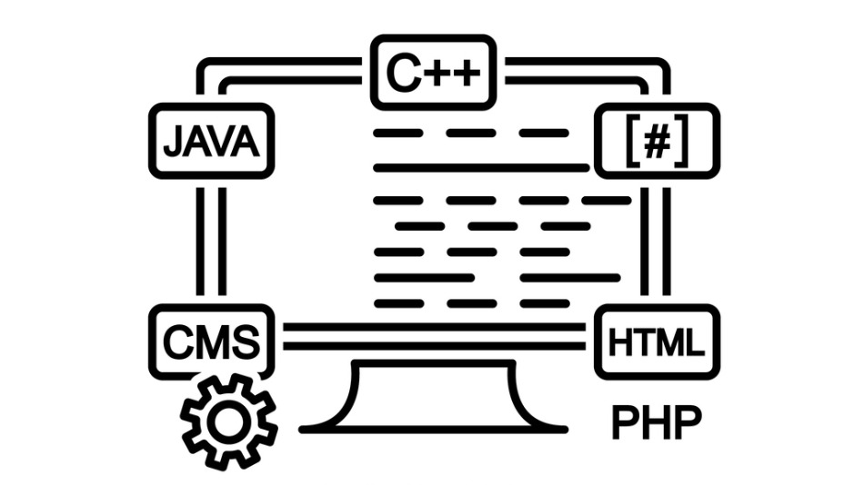

Introducción a la programación
Algoritmos, variables, tipos de datos, operadores y primeros programas.
Ver ejercicios →En este espacio voy guardando los ejercicios y prácticas que realizo en clase, organizados por temas.
Ver mis trabajos
Estos son los temas del curso. Actualmente estamos trabajando hasta el tema 4.
Algoritmos, variables, tipos de datos, operadores y primeros programas.
Ver ejercicios →Condiciones, bucles y sentencias de salto.
Ver ejercicios →Métodos, parámetros, valores de retorno y reutilización del código.
Ver ejercicios →Contenido que estamos trabajando actualmente en clase.
Ver tema →Este tema todavía no lo hemos trabajado en clase.
Este tema todavía no lo hemos trabajado en clase.
Este tema todavía no lo hemos trabajado en clase.
Este tema todavía no lo hemos trabajado en clase.
Este tema todavía no lo hemos trabajado en clase.